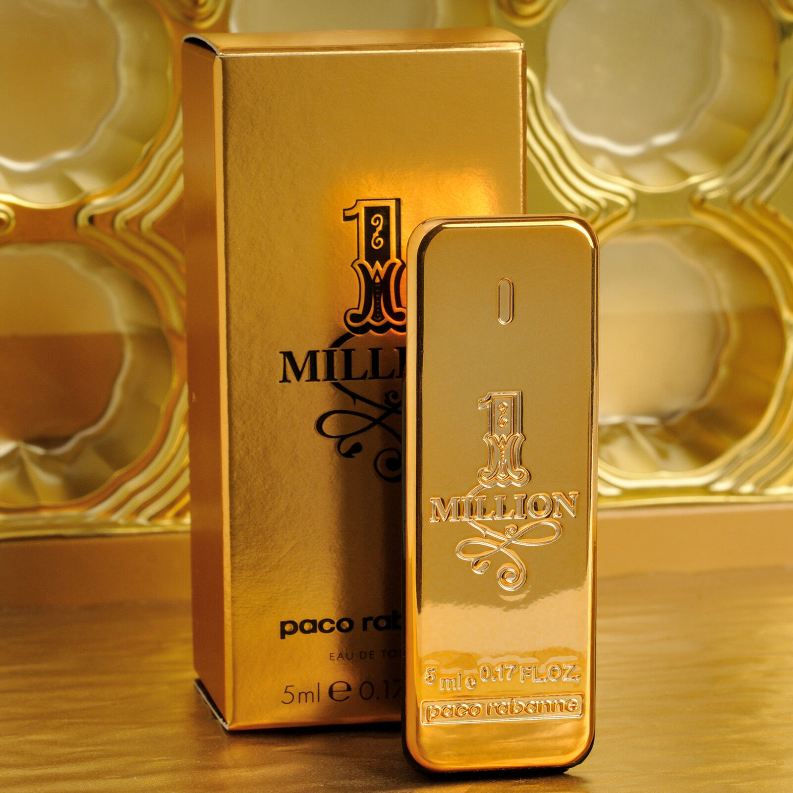

FOR MENS RECOMENDED
This Fragmence is Most recomended by Father Johny
However, it's worth noting that the Paco Rabanne 1 MILLION PERFUME is a widely popular fragrance that has received positive reviews and has been widely marketed as a men's fragrance. It is possible that the scent of the fragrance, as well as the brand's reputation and marketing efforts, have contributed to its popularity among men. Ultimately, the most recommended fragrance for someone will depend on their personal preferences and the specific occasion or context in which they will be wearing it. Factors that might influence a person's preference for a particular fragrance include the scent itself, the brand, the packaging, and the price.
1 MILLION PERFUME
|